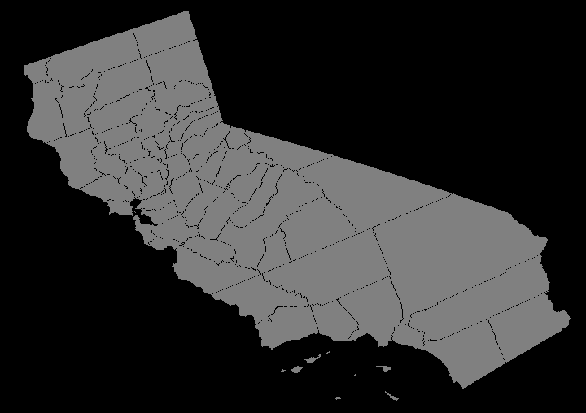
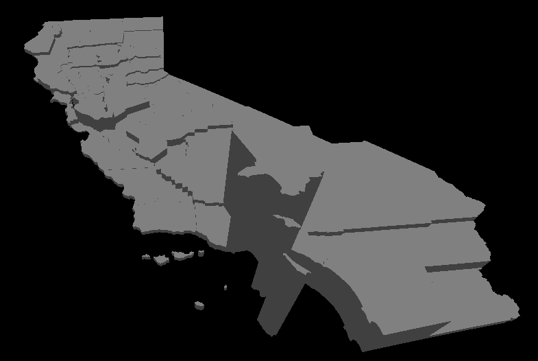
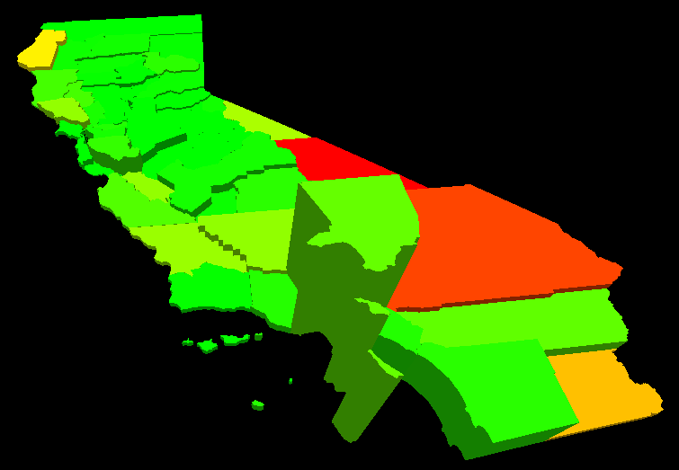
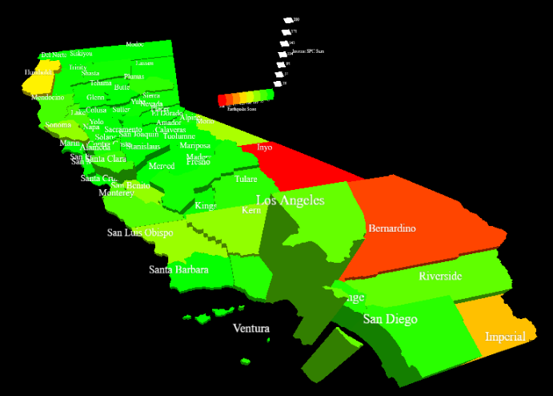
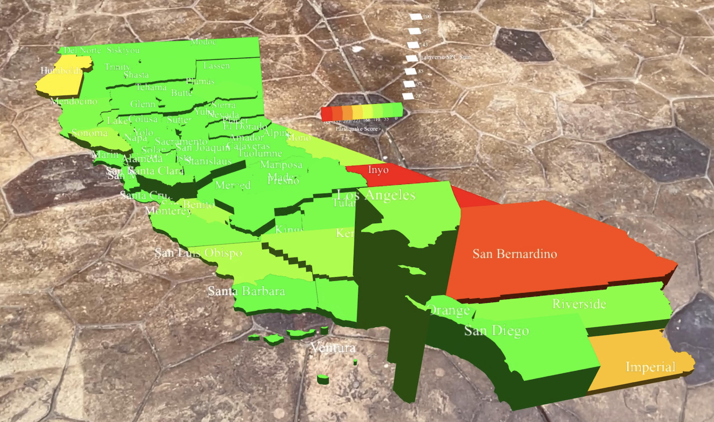

Home to the San Andreas Fault line, California is accustomed to earthquakes. Although the majority of earthquakes
typically have little to no consequences, they can be extremely dangerous, especially in areas with unsafe buildings and infrastructure.
The Loma Prieta earthquake of 1989 struck San Francisco, resulting in the loss of 63 lives, over 3,800 injuries, and $6 billion dollars of
property damage. Although many improvements have been made such as seismic retrofitting to brides and buildings, there are still
many areas across California with buildings unable to withstand a significant earthquake. This visualization explores the correlation
between historical earthquake data and seismic ratings of California hospitals using a 3D bar chart overlaying a 2D map of California with AR capabilities.

2D Map of California by County

Extruded County Shapes
The height of each county corresponds to the number of unsafe buildings within the county.

Color Scale
The color of each county corresponds to the historical earthquake activity within the county.

Final Three.js Implementation
Complete visualization with legend and county labels.
AR Capabilites

Screenshot from AR Visualization
AR Demonstration
Method
The Mozilla WebXR Viewer and XREngine library implement
the Three.js scene as an AR visualization tool. I chose to use these
tools because they are compatible with IOS devices. However, the XREngine is not compatible with most browsers
such as Chrome or Safari, so the Mozilla XRViewer application must be used to display the visualization.
Starting from the ”AR Anchor” example provided in the
WebXR Viewer Standard Examples, I modified the program
to display the 3D earthquake scene on interaction instead
of a simple cube. When the user taps the screen, the visualization is placed such that the
plane parallel to the 2D map is perpendicular to the AR
device. Once the visualization has been anchored, the user
can view it from any angle with the AR capabilities.
Results
The 3D map visualization with AR capabilities can
be used to identify which counties in California need to
improve their infrastructure to increase public safety. For
example, San Bernardino County has the third highest bar
height and is colored orange. This means the county has
significant earthquake history and many buildings with
low SPC ratings. In the event of a major earthquake event,
San Bernardino is more likely to endure property damage
compared to most other counties.
D3 Visualization
This visualization uses D3 to visualize the SPC Score and Earthquake Score data using a threshold color mapping. Toggle
between the two visualizations with the "Building Mode" and "Earthquake Mode" buttons.
Since there are outliers such as Los Angeles in the SPC data, this color mapping is useful when comparing counties with
lower SPC Scores. Built off of Mike Bostock's California Population Density.
The "Combined" button will display a visualization representing the Risk Score for each county. The risk score is a normalized sum of the county's SPC Score and Earthquake Score.